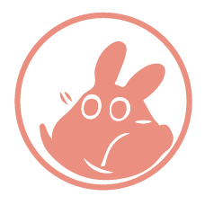

<ion-header [translucent]="true">
  <ion-toolbar>
    <ion-title>Libreta</ion-title>
  </ion-toolbar>
</ion-header>

<ion-content [fullscreen]="true">
  <ion-header collapse="condense">
    <ion-toolbar>
      <ion-title size="large">tab-tres</ion-title>
    </ion-toolbar>
  </ion-header>
  <div class="ion-padding">
    <ion-thumbnail>
      
    </ion-thumbnail>
  </div>
</ion-content>
